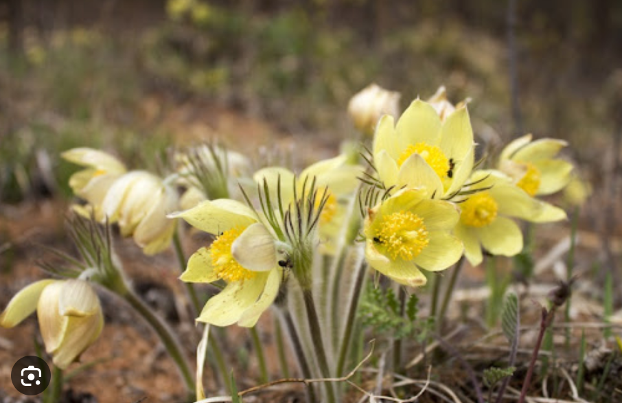
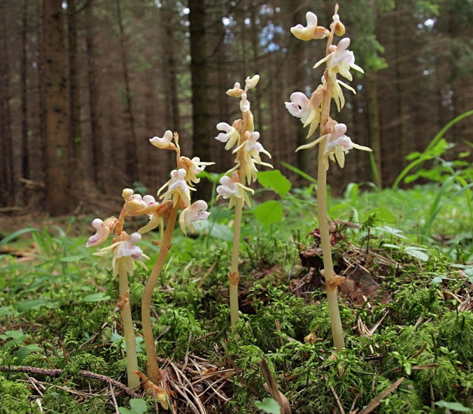

Прострел желтеющий
он растёт на сухих склонах и в светлых лесах
и чувствителен к вытаптыванию и сбору, считается
самым красивым растением Югры! Растение высотой ~от 7 до 45см с толстым вертикальным корневищем.
его цветки крупные до 5-6 см, появляются ранней осенью
Семейство: лютиковые
3-я категория в красной книге ХМАО - это редкий вид
Почему он в красной книге?
чаще всего его топчат, собирают, а так же у него медленный рост.
Не стоит забывать про пожары и нефтегазовую деятельность, что нехило вредит растению.

Набородник безлистый
уникальность этого растения говорит само за себя (безлистный), одно из самых необычных орхидей
во всей Югре! Стебли желтые, светло-жёлтые с высотой до 30см
Семейство: орхидейные
Это очень редкий вид, занесённый в красную книгу России
Почему в красной книге?
этого растения очень мало по Югре потому что у него специфические
требования к обитанию и низкая конкурентоспособность.
